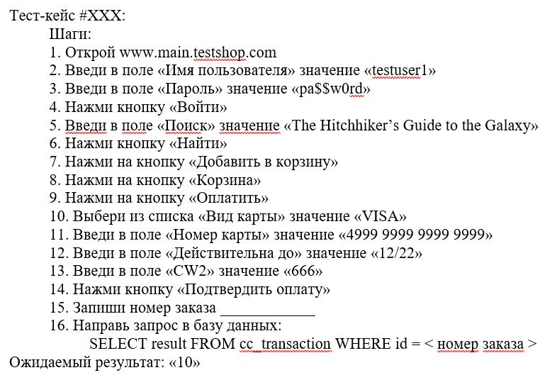
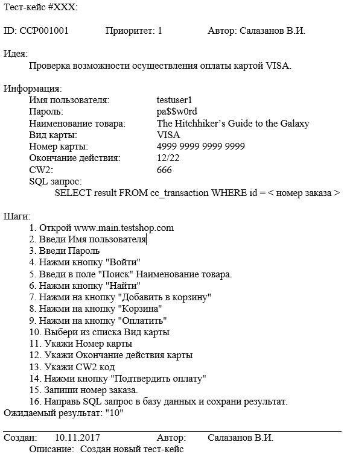
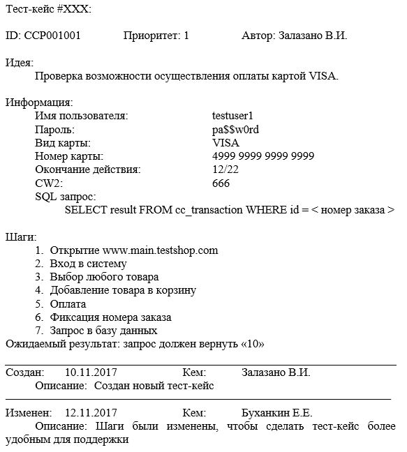

Тестирование ПО
Тест-кейсы
Edward & Albert / github:Tgjmjgj
Содержание лекции
Тест-кейсы
Формальной задачей тестировщика является написание и/или выполнение тест-кейсов.
Тест-кейс (тестируемая ситуация) - пошаговое описание процесса нахождения фактического результата.
Суть тест-кейса
Тест-кейс описывает процесс нахождения фактического результата и сопоставления его с ожидаемым. Он говорит нам, что делать, чтобы от старта приложения прийти к тестируемому объекту, и как правильно сравнить результаты.
Иными словами, тест-кейс - это сценарий теста.
Принципы построения тест-кейсов
Требования к тест кейсам:
- Независимость
- Идемпотентность
- Однозначность
Также любой тест-кейс должен проверять лишь одно логическое действие, один ожидаемый результат.
Принципы хороших тест-кейсов
Тест-кейсы не должны содержать ссылок на другие тест-кейсы.
Тест-кейсы не должны оставлять после своей работы следов в системе.
Структура тест-кейса
Допустим, тестировщику Анатолию был выдан такой тест-кейс:

И перед бедным Анатолием встают фундаментальные вопросы:
- Где ему взять карту VISA для проверки.
- И как, собственно, узнать, прошла оплата или нет.
В общем, этот тест-кейс очень плох.
Корректный тест-кейс
Исход исполнения тест-кейса
Результат выполнения любого тест-кейса строго детерминирован:тест либо прошёл (PASS), либо нет (FAIL)
Иногда возникают ситуации, когда тест не может завершиться, что тоже свидетельствует о наличии бага.
Атрибуты тест-кейса
- Уникальный ID
- Приоритет
- Идея
- Подготовительная часть
- История редактирования
Уникальный ID
Идентификатор должен быть обязательно, причём уникальный в рамках департамента качества (для ссылок, статистики, редактирования и т.д.).
Приоритет
Приоритет тест-кейса определяет, насколько прохождение конкретного теста критично для ПО. Обычно используется шкала приоритетов от 1 до 4.
Допустим, тест-кейс, проверяющий корректность добавления новой записи в базу данных, будет иметь приоритет 1. А тест-кейс, проверяющий шрифт кнопки "О программе" - приоритет 4.
Идея
Это описание конкретной вещи, проверяемой тест-кейсом. Просто и на понятном языке.
Подготовительная часть
В подготовительной части выносятся все ресурсы тест-кейса, которые используются во время его выполнения. Это своеобразный блок объявления переменных в едином месте.
В подготовительную часть тест-кейса могут включаться:
- Информация об аккаунте пользователя
- Другие данные, необходимые для ввода в процессе прохождения теста
- Запросе к базе данных
- Комментарии в помощь тестировщику
- Вещи, облегчающие исполнение и поддержку тест-кейса
История редактирования
Сведения о том, кто, когда и почему, вносил изменения в сценарий тест-кейса.
Дополненный тест-кейс
Data-driven тест-кейсы
На предыдущем этапе, за счёт вынесения всех данных в заголовок тест-кейса, мы получили Управляемый данными тест-кейс.
Преимуществом такого тест-кейса является то, что для модификации тест-кейса на проверку других карт достаточно лишь модификации начальных данных, тогда как шаги остаются неизменными.
Проблема поддерживаемости тест-кейсов
Поддерживаемость - способность тест-кейса подстраиваться под изменения в ПО.Чем выше абстрактность содержания тест-кейса - тем выше его поддерживаемость.
Баланс сил
При разработке любого тест-кейса нужно находить баланс между подробностью описания действий (однозначностью) и краткостью с обобщённостью (абстрагированием).Идеальный тест-кейс - где-то посередине.
Баланс сил
Перечисляющиеся в тест-кейсе шаги должны быть объективно чёткими и ясными, без двусмысленных вставок.Но нет необходимости описывать все шаги как для детей. Тест-кейс должен быть понятен любым другим тестировщикам.
Упрощение
Наш предыдущий пример тест-кейса с картой слишком переусложнен и перенасыщен информацией.Попробуем сделать его более кратким:
Упрощённый тест-кейс
Несколько ожидаемых результатов
Тест-кейсом проверятся только одна конкретная вещь, поэтому в идеальном случае у него должен быть всего один ожидаемый результат.Но бывают ситуации, когда система функционирует так, что для проверки какой-либо вещи необходимо выполнение обязательно нескольких условий.
Пример
Допустим, у нас совершается коммерческая сделка, и господин N. передаёт господину X. 1000 биткоинов. В этом случае ожидаемыми результатами могут одновременно являться:- 1. Счёт господина N. уменьшился на 1000 биткоинов.
- 2. Счёт господина X. увеличился на 1000 биткоинов.
Тест-комплекты
Тест комплект (test suite) - набор тест кейсов, сгруппированных по каким-либо общим признакам.
Обычно так организуют все тесты: тесты, затрагивающие какие-то смежные и связанные друг с другом компоненты системы, объединяют в один тест комплект.